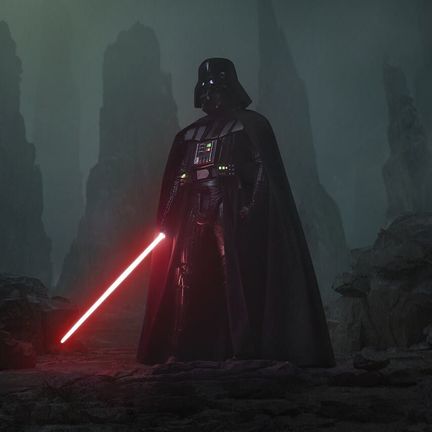
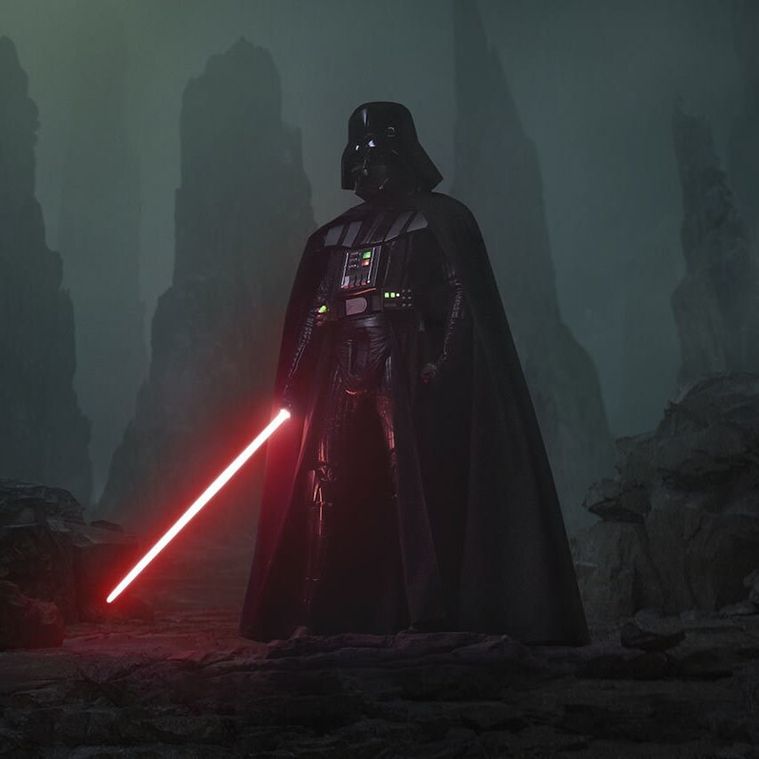
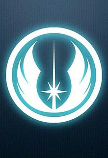

Darth Vader, nascido como Anakin Skywalker, é um dos personagens mais icônicos da franquia de Star Wars. Anakin começou sua vida como um escravo em Tatooine, mas foi descoberto pelo Jedi Qui-Gon Jinn, que acreditava que Anakin era o "Escolhido" destinado a trazer equilíbrio à Força. Ele foi treinado como Jedi sob a tutela de Obi-Wan Kenobi, revelando-se um prodígio excepcionalmente talentoso. No entanto, sua vida foi marcada por perdas e medo, o que gradualmente o levou a questionar os princípios Jedi e a buscar poder para proteger aqueles que amava.
A jornada de Anakin para se tornar Darth Vader começou quando ele foi seduzido pelo lado sombrio da Força pelo Senador Palpatine, que na verdade era o Lorde Sith Darth Sidious. Palpatine manipulou os medos e as ambições de Anakin, prometendo-lhe o poder de salvar sua esposa, Padmé Amidala, de uma morte que ele previu em visões. A transformação de Anakin em Darth Vader culminou na sua traição à Ordem Jedi e no massacre dos Jedi no Templo Jedi. Após um confronto devastador com Obi-Wan Kenobi em Mustafar, onde foi gravemente ferido, Anakin foi resgatado por Palpatine e reconstruído como Darth Vader, vestindo a icônica armadura negra que o ajudava a sobreviver.
Como Darth Vader, ele se tornou o executor implacável do Império Galáctico, caçando os Jedi sobreviventes e ajudando a consolidar o domínio de Palpatine sobre a galáxia. Apesar de sua aparência temível e sua reputação de crueldade, vestígios de Anakin permaneceram dentro de Vader, culminando em sua redenção final. No episódio final da trilogia original, "O Retorno de Jedi", o amor por seu filho Luke Skywalker levou Vader a trair Palpatine e sacrificar sua própria vida para destruir o Imperador, cumprindo assim a profecia do Escolhido e trazendo equilíbrio à Força.
 

Clique aqui para visitar o nosso sita sociedadejedi.
clique na imagem para ir direto para nosso site
